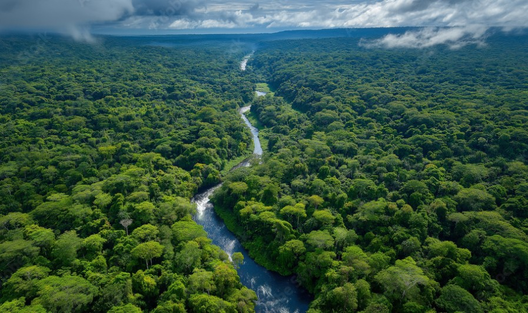
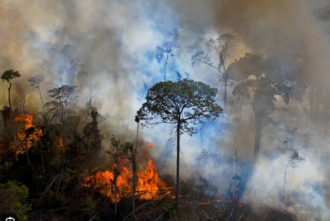
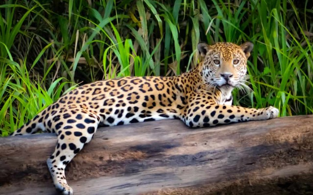

O Clima no Brasil: Mudanças e Poluição
O Brasil tem enfrentado mudanças climáticas severas nos últimos anos. O aumento da poluição atmosférica, as queimadas devastadoras e o desmatamento têm transformado o regime de chuvas, elevado as temperaturas médias e colocado em risco a rica biodiversidade do país. Além disso, eventos climáticos extremos como secas prolongadas, enchentes e ondas de calor têm se tornado mais frequentes. Essas mudanças afetam diretamente a agricultura, o abastecimento de água e a qualidade de vida da população. A preservação das florestas, a redução da emissão de poluentes e o uso consciente dos recursos naturais são medidas fundamentais para minimizar os impactos ambientais e garantir um futuro mais sustentável para as próximas gerações.
Impactos Visuais

A Floresta Amazônica e sua imensidão vital.

O avanço dos incêndios destruindo biomas.

Espécies nativas ameaçadas de extinção.